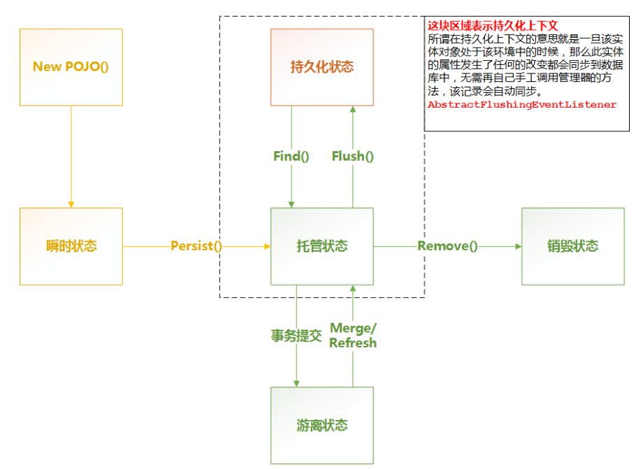

日常使用的各种命令
1.检查mysql缓存是否打开
show variables like '%query_cache%';
Variable_name |Value
have_query_cache |YES
query_cache_limit |1048576
query_cache_min_res_unit |4096
query_cache_size |0
query_cache_type |OFF
query_cache_wlock_invalidate |OFF
1.跳转到某一行
Ctrl + G
2.当前类的方法和变量
Ctrl + F12
3.替换文本
Ctrl + R
1.换行
连续2个空格
2.语法高亮
```后面加语言
支持的语言：actionscript, apache, bash, clojure, cmake, coffeescript, cpp, cs, css, d, delphi, django,
erlang, go, haskell, html, http, ini, java, javascript, json, lisp, lua, markdown, matlab, nginx,
objectivec, perl, php, python, r, ruby, scala, smalltalk, sql, tex, vbscript, xml
参考 https://segmentfault.com/markdown
算是对spring jpa对象状态的进一步理解吧
spring jpa version:1.10.1
底层hibernate: 5.1.0
从数据库查询出一些任务数据,分发,更改任务状态,执行任务,然后更新任务下次执行时间
save的时候除了下次执行时间,status字段也被更新了,由于在entity上面使用的dynamic update注解,所以debug看看具体怎么发生的
1.一路debug,进入到DefaultMergeEventListener,onMerge(line:64) -> createEntityCopyObserver(line:77) -> onMerge(line:105) 2.在line:144,获取EntityEntry,后续判断,发现对象已经处于游离状态
switch ( entityState ) {
case DETACHED:
entityIsDetached( event, copyCache );
break;
case TRANSIENT:
entityIsTransient( event, copyCache );
break;
case PERSISTENT:
entityIsPersistent( event, copyCache );
break;
default: //DELETED
throw new ObjectDeletedException(
"deleted instance passed to merge",
null,
getLoggableName( event.getEntityName(), entity )
);
}
然后进入到entityIsDetached方法 3.在这个方法里面(依然在DefaultMergeEventListener),line:289,从数据库读了一次,从log也可以看到进行了一次数据库读操作, 到下面的line:326,如下,target是从数据库刚读出来的对象,entity是我们想要进行update的对象,在copyValues的时候,虽然我们只 更新了执行时间,但是这时候2个对象的status值也是不同的,所以target的status被赋予了entity的status值,而这个值是错误的, 所以打印的update sql里面包含了set status=X 的语句
// cascade first, so that all unsaved objects get their
// copy created before we actually copy
cascadeOnMerge( source, persister, entity, copyCache );
copyValues( persister, entity, target, source, copyCache );
//copyValues works by reflection, so explicitly mark the entity instance dirty
markInterceptorDirty( entity, target, persister );
对spring jpa中对象的状态变化不够了解啊,数据查出来后,事务提交,则该对象就变成游离状态了 
使用spring jpa作为orm工具，有一个单向一对多关系，进行查询的问题，不加额外处理会有n+1问题
spring jpa version:1.10.1
底层hibernate: 5.1.0
@NoRepositoryBean
public interface CustomRepository<T, ID extends Serializable> extends JpaRepository<T, ID>, JpaSpecificationExecutor<T> {
Page<T> findAll(Specification<T> spec, Pageable pageable, EntityGraph.EntityGraphType entityGraphType, String entityGraphName);
Page<T> findAll(Specification<T> spec, Pageable pageable, String entityGraphName);
}
主要是使用EntityGraph
public class CustomRepositoryImpl<T, ID extends Serializable> extends SimpleJpaRepository<T, ID> implements CustomRepository<T, ID> {
private EntityManager em;
public CustomRepositoryImpl(JpaEntityInformation entityInformation,
EntityManager entityManager) {
super(entityInformation, entityManager);
this.em = entityManager;
}
@Override
public Page<T> findAll(Specification<T> spec, Pageable pageable, EntityGraph.EntityGraphType entityGraphType, String entityGraphName) {
TypedQuery<T> query = getQuery(spec, pageable.getSort());
query.setHint(entityGraphType.getKey(), em.getEntityGraph(entityGraphName));
return readPage(query, pageable, spec);
}
@Override
public Page<T> findAll(Specification<T> spec, Pageable pageable, String entityGraphName) {
return findAll(spec, pageable, EntityGraph.EntityGraphType.FETCH, entityGraphName);
}
}
上面的实现类和其他正常的repository放在不同的package
配置上面的实现类
<jpa:repositories base-package="xxx.yyy.repository"
base-class="xxx.zzz.CustomRepositoryImpl"
transaction-manager-ref="transactionManager"
entity-manager-factory-ref="entityManagerFactory" />
entity的代码,添加EntityGraph
@Table(name = "XX_YY")
@NamedEntityGraphs({
@NamedEntityGraph(
name = "xxyyWithZZ",
attributeNodes = {
//跟下面的属性同名
@NamedAttributeNode("imgList")
}
)
})
public class XXYYEntity implements Serializable {
private static final long serialVersionUID = -3476018376851461504L;
@Id
@GeneratedValue(strategy = GenerationType.IDENTITY)
@Column(name = "id")
private long id;
@Column(name = "name", length = 45)
private String name;
@Column(name = "desc", length = 45)
private String desc;
@OneToMany(fetch = FetchType.EAGER, cascade = CascadeType.ALL)
@JoinColumn(name = "zz_id")
@Where(clause = "is_valid=1") //这个条件是加在XXYYZZ表的where条件里面的
private List<XXYYZZ> imgList;
}
XXYY表的id和XXYYZZ的zz_id进行join关联
定义一个repository，继续最开始的自定义repository接口，然后在service里面组装好Specification，Pageable，并指定entigyGraph名称 进行调用
Page<XXYYEntity> content = xxyyRepository.findAll(spec, pageable, "xxyyWithZZ");
1.若一个entity包括多个一对多关系，则需要把list换成set，否则报错，或者显示指定@IndexColumn 2.不使用上面的方式，直接定义一个repository,然后使用@EntityGraph注解
XXYYRepository extends JpaRepository<XXYYEntity, Long>,
JpaSpecificationExecutor<XXYYEntity> {
@EntityGraph("xxyyWithZZ")
List<XXYYEntity> getByIsValid(int valid);
}
假设xxyy有4条记录，前两条记录分别有2条XXYYZZ，则上述查询会返回6条记录,如下
1-{2条xxyyzz}
1-{2条xxyyzz}
2-{2条xxyyzz}
2-{2条xxyyzz}
3-
4-
后期可以看看为什么这么返回以及如何处理
参考
http://docs.spring.io/spring-data/jpa/docs/current/reference/html/#jpa.query-methods.at-query
http://docs.spring.io/spring-data/jpa/docs/current/reference/html/#repositories.single-repository-behaviour
用resteasy调用其他系统的服务,配置的http pool,为了检验一下何时释放的链接,debug了一下,对调用链路做个笔记
resteasy version:3.0.19.Final
执行前
ClientProxy
-> ClientInvoker
-> ClientRequest
-> ClientExecutionContextImpl
-> ApacheHttpClient4Executor
-> CloseableHttpClient
-> InternalHttpClient.doExecute
1.在ApacheHttpClient4Executor, 创建了释放链接和从stream中获取对象的类
2.BodyEntityExtractor, 这里检测http status是否异常，异常则抛异常,且返回异常的对象的时候，做了一个copy stream的动作,
这样保证释放了当前的链接, 又保留了原始的数据流, 这样如果客户端想要进行自定义的一些操作，依然可以读到数据
First private blog, take a note.